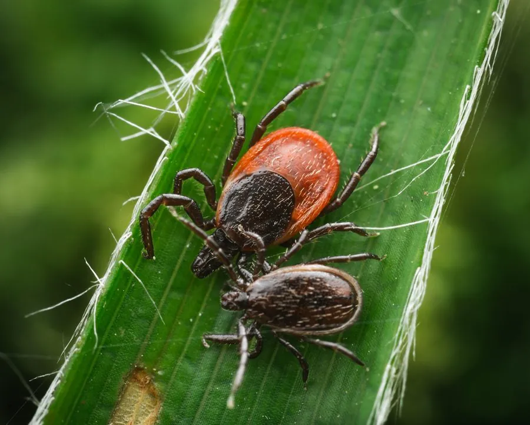

蛛形动物 · 动物界
蓖麻硬蜱 Ixodes ricinus

欧洲常见的硬蜱，体色红褐，吸血后膨大如豆，可传播莱姆病和蜱传脑炎，是重要的公共卫生媒介。
- 分类
- 门节肢动物门纲蛛形纲目蜱目科硬蜱科属硬蜱属
- 栖息环境
- 林地、草地和灌丛，多在草叶尖端等待宿主经过
- 地理分布
- 欧洲、北非和西亚，分布范围随气候变暖北扩
- 保护级别
- IUCN 暂无评估；中国未列入国家重点保护名录
物种志
蓖麻硬蜱未吸血时体长仅 2–4 mm，雌蜱背部有一块红褐色盾板，雄蜱盾板覆盖整个背部；足细长，口器短小，吸血后身体可膨大到原来的数十倍，呈灰蓝色。
它分布于欧洲、北非和西亚的林地、草地和灌丛，生活史包括卵、幼蜱、若蜱和成蜱四个阶段，幼蜱和若蜱多寄生在小鼠、鸟类等小型动物身上，成蜱则常寄生于鹿、羊和人类。蓖麻硬蜱是莱姆病和蜱传脑炎的重要传播媒介，叮咬时分泌麻醉物质，常不易察觉，发现后应尽快用镊子贴近皮肤拔出。它喜欢潮湿温暖的环境，春夏季活动最盛，分布范围随气候变暖而向北扩展。目前 IUCN 暂无评估；中国未列入国家重点保护名录。
形态与习性
- 食性吸血，幼蜱和若蜱寄生小型动物，成蜱寄生大型哺乳动物
- 体长未吸血 2–4 mm，吸血后可膨大数十倍
- 识别雌蜱背部有红褐色盾板，足细长
- 生活史卵、幼蜱、若蜱、成蜱四阶段
- 危害传播莱姆病和蜱传脑炎
- 活动春夏季最活跃，喜潮湿温暖环境
趣味知识
- 蓖麻硬蜱吸血后能胀大到原来的几十倍，像一颗灰蓝色的小豆。
- 它叮咬时会分泌麻醉物质，常让人感觉不到被咬。
- 蓖麻硬蜱是莱姆病和蜱传脑炎的重要传播媒介。